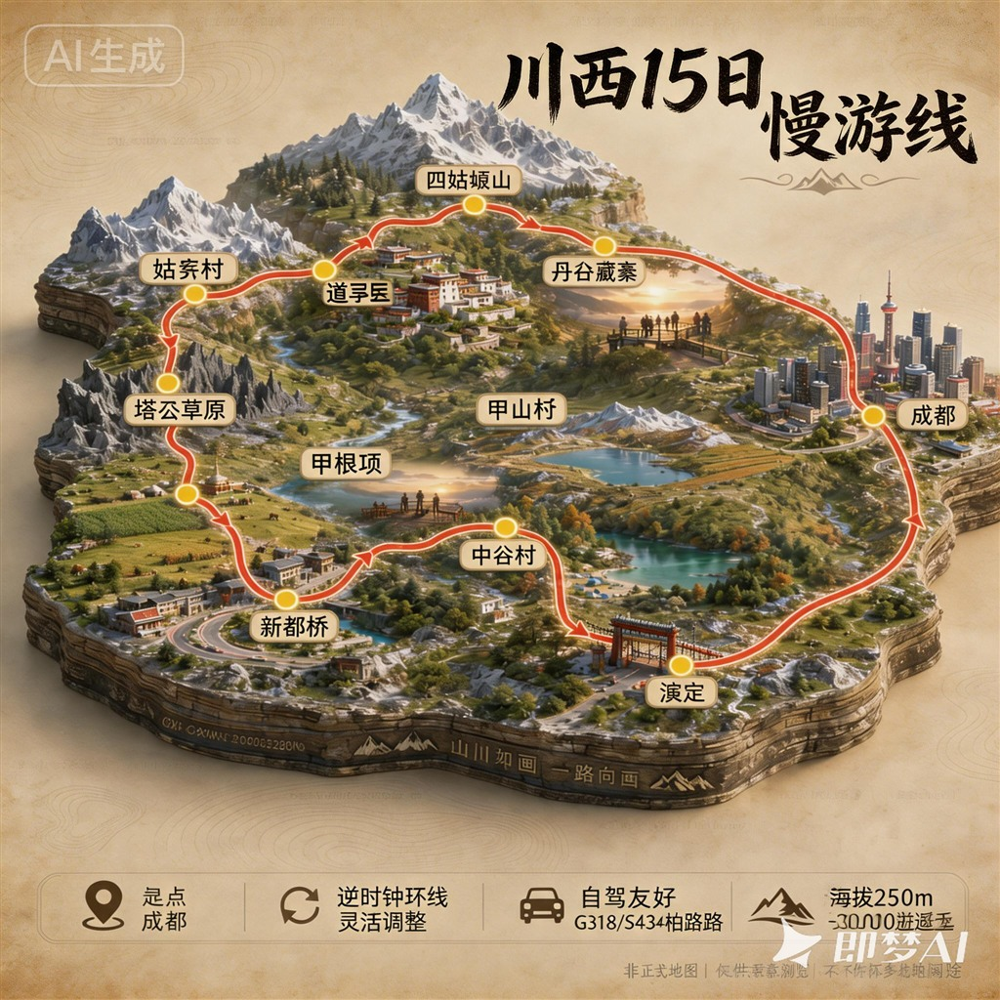

🏔️ 川西15天自驾慢游全攻略
三大固定大本营 · 亲子宠物友好 · 7月雨季适配
自然风光为主 · 人文点缀 · 全程弹性不赶路
🗺️ 全程行程概括 & 设计说明
▶

1. 设计初衷与核心目标
针对一家三口（14岁女儿）、两只中华田园犬、锐界2.7T V6四驱车型定制，兼顾高原适应安全、景观丰富度、家庭出行舒适度，拒绝天天换酒店、拒绝高强度赶路、拒绝网红打卡式旅游。
以「自然风光为核心，1-2处深度人文拓展视野」为原则，优先选择人少、原生态、路况可控的点位，避开暑期人流高峰。
2. 核心游玩原则
- 大本营原则：全程设3处固定大本营，每处连住2-3晚，减少搬运行李频次
- 海拔渐变原则：中谷村2500m → 甲根坝3000m → 道孚2980m，循序渐进
- 弹性优先原则：所有长线、备选点位均可随时放弃，状态不好直接原地休整
- 雨季安全原则：雨天不进山、不走碎石路、不赶夜路
- 宠物友好原则：全程优先选带停车场的住宿，宠物可安置车内
3. 三大本营梯度设计逻辑
| 大本营 | 海拔 | 定位 | 核心作用 |
|---|---|---|---|
| 中谷村 | 2500m | 低海拔适应站 | 温泉缓解疲劳，平缓适应海拔 |
| 甲根坝 | 3000m | 河谷秘境核心 | 比新都桥人少景纯，田园+溪流+雪山组合 |
| 道孚 | 2980m | 北线风光拓展 | 辐射草原、石林、藏寨人文 |
第四备选大本营：丹巴中路藏寨（返程低海拔人文补充，雨季/状态差可直接舍弃）
主要点位
泸定桥红色打卡 · 中谷村天然温泉低海拔适应 · 南门关沟无人河谷轻徒步 · 甲根坝田园溪流慢逛 · 姑弄村雅拉雪山观景 · 塔公草原远观 · 道孚民居藏式文化体验 · 中路藏寨碉楼星空 · 成都熊猫谷看熊猫 · 人民公园喝茶休整
🗺️ 每日路线走向
D4 中谷村 ←→ 南门关沟（轻徒步一日游）
D5 中谷村 ←→ 雅家梗/红海子（备选一日游）
D7 甲根坝 ←→ 提吾村/亚拢沟（一日游）
D8 甲根坝 ←→ 月亮湖/日泽村（一日游）
D10 道孚 ←→ 墨石公园/泰宁古镇（一日游）
D12 丹巴 → 四姑娘山(猫鼻梁) → 映秀 → 重庆
D13 重庆休整 · 洪崖洞/李子坝/磁器口
D14 重庆 → 武汉（全程高速880km）
D15 武汉 → 上海（全程高速830km）
环线返程（D11 道孚出发）
| 线路 | Plan A 丹道秘境（晴天） | Plan B G350熊猫大道（雨天/求稳） |
|---|---|---|
| 🟢 D11 | 道孚→玉科大草原→党岭村→丹巴，~165km/6-7h | 道孚→八美→塔公→姑弄村→丹巴，~180km/5-6h |
| 🟢 D12 | 丹巴→四姑娘山(猫鼻梁)→映秀→重庆，~550km/9-10h | |
4. 这条路线不算经典"川西小环线"
经典川西小环线为成都→四姑娘山(阿坝)→丹巴→新都桥→成都，需跨越甘孜和阿坝两州。本行程聚焦甘孜州东线，刻意没有硬凑环线：
- 减少翻垭口：巴郎山4520m、折多山4298m雨季风险高，对14岁孩子挑战大
- 住宿海拔可控：全程≤3000m，而小环线新都桥3300m+，高反概率更低
- 不赶路：小环线每天6-8h车程；本行程每天≤4h，符合亲子节奏
如果非要归类，这叫"甘孜州东线深度游"或"川西慢游线"——3个大本营连住、海拔循序渐进、每天开车少、玩得更透。
5. 车辆适配说明
2015款锐界2.7T V6四驱，动力充足、通过性强，可轻松应对折多山长上坡、雨季湿滑路面、轻度碎石路段；全程主干道均为柏油路。
🗺️ 四川段路线地图
▶
📋 出行基础信息
▶
🗺️ 全程行程总览
▶
| 阶段 | 天数 | 行程 | 住宿 |
|---|---|---|---|
| 长途赶路 | D1 | 上海→湖北宜昌/恩施 | 宜昌 或 恩施 |
| D2 | 宜昌/恩施→四川成都 | 成都 | |
| 第一大本营 低海拔适应 | D3 | 成都→泸定桥→中谷村 | 中谷村 连住3晚 |
| D4 | 南门关沟轻徒步 | ||
| D5 | 温泉放空+雅家梗备选 | ||
| 第二大本营 河谷秘境 | D6 | 中谷村→甲根坝 | 甲根坝 连住3晚 |
| D7 | 提吾村河谷+钙化滩 | ||
| D8 | 月亮湖备选/原地休整 | ||
| 第三大本营 北线拓展 | D9 | 甲根坝→道孚（途经姑弄村） | 道孚 连住2晚 |
| D10 | 墨石公园/玉科大草原备选 | ||
| 环线返程 | D11 | 道孚→🟢丹巴（G350熊猫大道/丹道秘境按天气选） | 中路藏寨/丹巴 |
| D12 | 丹巴→四姑娘山(猫鼻梁)→映秀→重庆 | 重庆 | |
| 休整 | D13 | 重庆休整（洪崖洞/李子坝/磁器口） | 重庆 |
| D14 | 重庆→武汉（全程高速880km） | ||
| 返程 | D15 | 武汉→上海（全程高速830km） | - |
⭐ 景点优先级分级
▶
必去核心自然风光，行程主轴 备选视状态决定 路过顺路浅逛
| 等级 | 点位 | 类型 | 说明 |
|---|---|---|---|
| 必去 | 中谷村温泉 | 温泉/自然 | 海拔适应核心，缓解长途疲劳 |
| 必去 | 南门关沟 | 河谷/红石 | 人少景纯，轻度徒步友好 |
| 必去 | 甲根坝河谷 | 田园/溪流 | 全程最松弛的小众秘境 |
| 必去 | 提吾村 | 藏寨/人文 | 原始藏寨，宠物友好，深度体验 |
| 备选 | 雅家梗红石滩 | 红石/自然 | 单程1h，雨天路滑放弃 |
| 备选 | 月亮湖 | 海子/森林 | 单程1.5h，状态好再前往 |
| 备选 | 墨石公园 | 地质/人文 | 地质奇观，有免费替代卡玛桥 |
| 备选 | 丹巴中路藏寨 | 藏寨/人文 | 千年碉楼，返程顺路可选 |
| 备选 | 亚拢沟 | 钙化池/自然 | 高原钙化池景观，顺路探索 |
| 备选 | 熊猫谷 | 动物/亲子 | 小熊猫半散养互动，比基地人少 |
| 备选 | 成都博物馆 | 人文/历史 | 免费空调足，提前14天预约 |
| 路过 | 折多山垭口 | 垭口/观景 | 短暂停车拍照，不久留 |
| 路过 | 江巴牧场 | 草甸/雪山 | S434沿途免费观景台，短暂停留拍雪山 |
| 路过 | 泸定桥 | 人文/历史 | 去程D3顺路，游玩1-2h上桥体验 |
| 路过 | 姑弄村 | 草原/雪山 | 顺路经过，雅拉雪山观景点 |
| 路过 | 东郊记忆 | 工业/文创 | 工业风拍照打卡，teenagers喜欢 |
| 路过 | 人民公园 | 休闲/茶文化 | 鹤鸣茶社喝盖碗茶，游客多 |
| 路过 | 宽窄巷子 | 商业/街景 | 只逛不买，晚上去拍红灯笼 |
| 路过 | 太古里/IFS | 商圈/打卡 | 爬楼熊猫20分钟打卡够用 |
| 路过 | 文殊院 | 寺庙/人文 | 红墙拍照，免费请香，游客少 |
| 路过 | 三道堰古镇 | 古镇/玩水 | 成都近郊玩水吃河鲜，亲子半日游 |
🛣️ 川西自驾 · 司机视角的国道风景指南
▶
你们的路程已覆盖川西最美的几条景观大道。以下是最值得期待的驾驶路段：
| 国道 | 路段 | 里程 | 风景 | 驾驶特点 |
|---|---|---|---|---|
| G318 | 泸定→康定→新都桥 | ~160km | 5/5 | 经典川藏线第一程，峡谷→雪山→草原渐变 |
| G350 | 丹巴→小金→四姑娘山 | ~200km | 5/5 | 熊猫大道，河谷森林雪山立体景观 |
| S434 | 甲根坝→新都桥→塔公 | ~100km | 4/5 | 小众秘境线，人少景美，田园雪山同框 |
| G548 | 八美→道孚→丹巴 | ~150km | 4/5 | 藏寨碉楼群连绵，人文景观密集 |
G318 国道·泸定至新都桥段（D3/D6）
泸定→康定：大渡河峡谷并行，隧道桥梁多，海拔从1300m快速爬升至2500m，注意控制车速。
康定→折多山垭口：盘山路连续发卡弯，垭口可远眺贡嘎雪山，雾天能见度低需谨慎。
折多山→新都桥：被称为"摄影家天堂"，开阔草甸、白杨树、溪流、藏寨散落其间。
G350 熊猫大道·丹巴至四姑娘山段（D11/D12 备选环线）
丹巴→小金县：大金川河谷并行，两岸梯田和藏寨层层叠叠。
小金县→巴郎山→四姑娘山：翻越巴郎山垭口4520m，云海概率高；雨季易有大雾，能见度低时建议放弃翻山。
四姑娘山→成都：下山后进入岷江谷地，路况好但弯道多，注意横风。
S434 省道·甲根坝秘境线（D6/D9）
甲根坝→新都桥：沿小河行驶，两侧高山草甸和雪松林，车可开到河边让狗狗跑跑。
新都桥→塔公→姑弄村：雅拉雪山全程伴行，下午光线好时拍日照金山绝美。
驾驶员专属提示
- 最佳驾驶时段：上午9:00-12:00和下午15:00-18:00光线最好；午后13:00-15:00容易起雾，建议休息或低速慢行
- 观景台使用：G318沿线有正规观景台，不要在弯道或盲区停车
- 牛羊横穿：牧区减速鸣笛，牦牛群过马路时耐心等待，它们比车更有"路权"
- 隧道通过：泸定到康定、新都桥到塔公都有长隧道，进出光线变化大，提前开灯减速
风景 vs 路况权衡
| 路段 | 风景 | 难度 | 建议 |
|---|---|---|---|
| G318 泸定→新都桥 | 5/5 | 3/5 | 成熟路线，新手友好 |
| G350 丹巴→四姑娘山 | 5/5 | 4/5 | 雨季慎走，需确认路况 |
| S434 甲根坝→塔公 | 4/5 | 2/5 | 小众秘境，适合慢游 |
| G548 八美→道孚 | 4/5 | 2/5 | 藏寨风光密集，补给方便 |
最值得期待的片段：上午从新都桥出发，沿S434慢慢开到塔公，雅拉雪山一路伴行，随时能停路边拍照——这才是川西自驾的真正乐趣。
📅 每日详细行程
D1 上海 → 宜昌/恩施 · 长途赶路 ▶
总里程：上海→成都约1966km（G42沪蓉高速），分两天行驶
方案A（推荐）：宜昌落脚，约1050km，行车约10h
方案B（进阶）：恩施落脚，约1150km，行车约11h
路线：G42沪蓉高速（上海→南京→合肥→武汉→宜昌/恩施）
节奏：每1.5小时停靠服务区休息，中午长时间休整用餐。
📍 伍家岗区伍临路33号鑫鼎大厦
🚗 距G50宜昌东出口约3km，距宜昌东站4.3km
🅿️ 免费停车场 · 118间客房 · 亚朵品质
约300-400元/晚
🗺️ 高德 🗺️ 百度 📋 携程预订
💡 当日注意
出发前加满油，检查胎压；车上备足饮用水、零食、宠物饮水器。选宜昌则D2行车约900km至成都，选恩施则D2约750km更轻松。D2 宜昌/恩施 → 四川成都 · 进川休整 ▶
路线A（宜昌出发）：约900km，行车约9h
路线B（恩施出发）：约750km，行车约7.5h
路线：G42沪蓉高速（宜昌/恩施→重庆万州→南充→成都）
抵达后：入住酒店，采购全程物资：氧气瓶、防晒用品、高热量零食、高原应急药品。
🏪 周边有大悦城、伊藤洋华堂等大型商超，方便采购氧气瓶、药品、干粮等进藏物资
中档推荐：成都大悦城武侯大道地铁站亚朵X酒店 推荐评分4.8
📍 武侯区武侯大道双楠段281号
🚗 武侯大道直达成雅高速入口（约3km），D3出发约10分钟上高速
🅿️ 免费停车 · 地铁7号线武侯大道站步行5分钟
🏪 近大悦城、伊藤洋华堂，采购物资极方便
约350-500元/晚
🗺️ 高德 🗺️ 百度 📋 携程预订
D3 成都 → 泸定桥 → 中谷村 · 海拔适应 ▶
里程：约310km，行车约4.5h（不含游玩）
路线：成雅高速 → 雅康高速 → 泸定(泸定桥游玩2h) → 康定 → 中谷村
当日规则：抵达后不洗澡、不剧烈运动、不饮酒，清淡饮食。
🌉 途经 · 泸定桥
途经成都出发约2.5h到泸定，正好下车活动一下再继续进高原。
🐕 带狗温馨提示
- 建议备好 护爪鞋（防碎石烫伤）、凉感衣（高原紫外线强）
- 南门关沟路段有碎石坡、青苔滑、地面烫脚问题，狗建议只入口红石滩活动，不深入徒步
- 寺庙等宗教场所不能带狗进入
- 全程牵绳，不要放开，避免惊扰牛羊
D4 中谷村 · 南门关沟轻徒步 ▶
车程：单程约0.5h，铺装路+少量碎石路
活动：红石河谷轻徒步、溪边野餐，往返约3km
核心点位：南门关沟
必去2. 景观层次丰富：红石滩、雪山、溪流、高山花海同框；
3. 徒步难度极低，全程平缓。
📍 康定市雅拉乡，导航「南门关沟」可达
🗺️ 高德 🗺️ 百度
建议：只在入口红石滩区域活动，不深入徒步。出发前给狗穿好护爪鞋。
备选方案：江巴牧场
备选💡 当日注意
随身带饮用水和零食；河谷风大带好防风外套；垃圾全部带走。D6 中谷村 → 甲根坝 · 河谷秘境 ▶
里程：约150km，行车约3h
路线：中谷村 → 康定 → 折多山垭口 → 甲根坝
建议：早出发避午后降雨，锐界四驱无压力。
核心点位：甲根坝田园河谷
必去2. 海拔约3000m，比新都桥略低，高反压力小；
3. 周边免费小众点位密集，不用赶路。
📍 康定市甲根坝镇
🗺️ 高德 🗺️ 百度
垭口海拔4298m，气温比康定低10℃左右，下车拍照务必穿冲锋衣。
🐕 狗狗在垭口易高反（喘气急促），停留控制在15分钟内，备好宠物外套。
雨季盘山路多弯，上午天气相对稳定，建议早出发。
备选：天气晴好可绕道「鱼子西星空营地」或「格底拉姆·天空之城」看日落金山（约17:00-20:00）
⚠️ 海拔4200m+比折多山更高，高反风险更大；绕路约40min，傍晚时间较紧，仅天气好+时间充裕时考虑
🏨 甲根坝品质住宿推荐（连住3晚）
📌 选房建议
追求极致景观 → 九米雪山（观景台拍日照金山，14岁女儿会喜欢拍照打卡）家庭舒适首选 → 云里山居 或 木雅·原乡别院（套房户型+地暖，高原晚上很关键）
性价比优先 → 壹品山景（价格亲民，省下的钱吃顿好的）
📅 7月雨季预订提醒
提前锁房：7月中旬川西小高峰，建议至少提前1周订房保暖设备：确认是否有地暖/电热毯/取暖器，高原早晚温差大
热水稳定：高海拔热水器可能不稳，洗澡前问问老板
停车位：锐界车身大，确认民宿有足够停车位方便照顾狗狗
⛽ 加油：甲根坝镇无正规加油站！最近的新都桥约40km，进山前务必在新都桥加满
通风：即使开窗也要留足够缝隙，白天阳光下车内升温快
安全：停车时牵绳固定，防止狗狗乱跑遇到牦牛
备用方案：如遇下雨或天气突变，提前和民宿老板沟通能否临时让狗狗进大堂/走廊避雨
D7 甲根坝 · 河谷慢逛日 ▶
上午：提吾村河谷踩水、野餐、捡石头
下午：亚拢沟钙化滩散步，日落前观景拍照
车程：全程单程均不超过10分钟
核心点位：提吾村河谷
必去🌅 日落时间
7月中旬川西日落约20:30-20:45，建议19:30开始找机位，光线最柔和。D8 甲根坝 · 月亮湖备选日 ▶
Plan A（状态好）：月亮湖轻徒步（单程1.5h）
Plan B（状态一般）：二刷提吾村河谷 + 民宿躺平
Plan C：跟民宿老板进山捡菌子（7月菌季特色）
Plan D（下雨备选）：日泽村藏寨小桥流水
Plan A：月亮湖
备选Plan B/C：二刷提吾村 / 捡菌子
状态一般Plan D（下雨备选）：日泽村
推荐D9 甲根坝 → 道孚 · 丹道秘境线 ▶
里程：约220km，行车约4.5h
路线：甲根坝 → 塔公 → 八美 → 道孚县城
途经停留：姑弄村短暂停留野餐、远观雅拉雪山
7月雨季丹道秘境（多杰玉崇垭口段）为炮弹坑+碎石路，党岭至丹巴段有涉水路段和落石风险。
多位用户反馈"惨不忍睹""一路躲避落石"。建议：
Plan A（推荐）：甲根坝→新都桥→塔公→姑弄村→道孚（全程柏油路，顺路打卡姑弄村，风景不输丹道秘境）
Plan B：丹道秘境原路线（炮弹坑段，雨季不推荐）
Plan C（保守）：甲根坝→康定→泸定→成都（提前到成都休整）
途经点位：姑弄村
途经💡 沿S434有很多免费观景台，景色类似且更方便停车，不必专门去姑弄村。
携程·姑弄村攻略
约200-300元/晚
D11 道孚 → 丹巴 · 两条路线按天气选 ▶
7月雨季走丹道秘境（Plan A）有炮弹坑+落石+涉水风险，多位用户反馈"惨不忍睹"。
出发前查 Windy 看道孚/玉科天气，阴天/下雨一律选 Plan B G350熊猫大道。
📌 两条路线如何选择
| 条件 | 推荐线路 | 原因 |
|---|---|---|
| 早上晴天、能见度好 | Plan A 丹道秘境 | 风景更原始，玉科草原"康巴阿勒泰"值得走 |
| 阴天/下雨/雾大 | Plan B G350熊猫大道 | 全程柏油路，安全第一 |
| 孩子或狗狗状态一般 | Plan B G350 | 更平稳，减少晕车可能 |
| 想多玩沿途观景台 | Plan B G350 | 观景台更多更成熟，随时停车 |
☀️ Plan A：丹道秘境线（晴天首选）▶
里程：约165km，行车6-7h（含游玩）
适用：☀️ 晴天、能见度好、SUV四驱更稳妥
路线：道孚县城 → 玉科大草原 → 党岭村 → 道孚县北部垭口群 → 丹巴县城/中路藏寨
途经点详情
| 时间 | 点位 | 活动 | 导航 |
|---|---|---|---|
| 9:00-9:30 | 道孚县城出发 | 加满油，检查车况 | 🗺️高德 |
| 10:30-12:00 | 玉科大草原 | 高原草原观景，拍照，野餐 | 🗺️高德 |
| 12:30-13:00 | 多杰玉崇垭口4800m+ | 短暂停留拍照，⚠️注意高反 | 导航不好搜，跟着路牌走 |
| 13:30-14:00 | 白日垭口 | 俯瞰峡谷，限停10min | 导航不好搜，跟着路牌走 |
| 15:00-16:00 | 党岭村 | 途经补给，可下车活动 | 🗺️高德 |
| 17:00- | 中路藏寨/丹巴 | 入住民宿，逛藏寨看日落 | 🗺️高德 |
· 多杰玉崇垭口、白日垭口段 无手机信号，提前下载离线地图
· 非铺装炮弹坑路段约40km，涉水点3处，落石高发
· SUV四驱才能走，轿车不建议
· 7月雨季绝不可走！如出发前预报有雨，立刻改 Plan B
🌧️ Plan B：G350熊猫大道（雨季/求稳首选）▶
里程：约180km，行车5-6h（含观景台停留）
适用：🌧️ 阴天/下雨/求稳 / 带娃带狗状态一般
路线：道孚县城 → 八美草原观景台 → 墨石公园外围 → 塔公草原观景台 → 姑弄村 → 丹巴河谷观景台 → 中路藏寨/丹巴
途经点详情
| 时间 | 点位 | 活动 | 导航 |
|---|---|---|---|
| 9:00-9:30 | 道孚县城出发 | 加满油，出发 | 🗺️高德 |
| 10:30-11:00 | 八美草原观景台 | 免费停车，远眺雅拉雪山 | 🗺️高德 |
| 11:15-11:30 | 墨石公园外围 | 公路对面免费拍异域地貌 | 🗺️高德 |
| 12:30-13:30 | 塔公镇午餐 | 补充物资，可拍雅拉雪山+木雅金塔 | 🗺️高德 |
| 14:00-15:30 | 姑弄村 | 核心玩法！溪边木栈道，狗狗放风，拍日照金山 | 🗺️高德 |
| 16:00-16:15 | 丹巴河谷观景台 | 俯瞰大金川河谷和藏寨群 | 🗺️高德 |
| 16:30- | 中路藏寨/丹巴 | 入住民宿，看夜景 | 🗺️高德 |
· 全程柏油路，轿车无压力
· S215部分路段较窄，会车注意，牧区有牦牛横穿
· 全程大部分有信号，垭口偶尔无服务
🏡 丹巴住宿推荐（两线共用）
🗺️ 高德
道孚县城出发前加满油（县城中石油可靠）
八美镇有小加油站但雨季可能缺油，路过低于半箱就补
丹巴县城加油站在进城主干道上，正常营业
无论选哪条路，导航终点直接设「丹巴中路藏寨」，不要搜"丹道秘境"以免误入烂路
G350沿途部分垭口可能无信号，提前下载离线地图
D12 丹巴 → 四姑娘山(猫鼻梁) → 映秀 → 重庆 ▶
总里程：约550km，行车9-10h（返程最长的一天）
路线：丹巴县城 → 四姑娘山(猫鼻梁观景台) → 映秀镇 → G5013渝蓉高速 → 重庆渝北
· 7点前从丹巴出发，避免午后巴郎山起雾
· 猫鼻梁观景台停留不超过30分钟，拍完就走
· 全程长途，每2小时进服务区让狗狗活动
· 四姑娘山→映秀段G350弯多坡陡，隧道多光线变化大，注意减速
分段详情
| 时段 | 路段 | 里程 | 活动 | 导航 |
|---|---|---|---|---|
| 7:00-10:00 | 丹巴→四姑娘山 | ~120km/3h | 猫鼻梁观景台免费看全景，早能见度好 | 🗺️高德 |
| 10:00-13:00 | 四姑娘山→映秀 | ~130km/3.5h | G350熊猫大道，弯多坡陡隧道多 | 🗺️高德 |
| 13:00-18:00 | 映秀→重庆 | ~380km/4.5h | G5013渝蓉高速，路况好但车流量大 | 🗺️高德 |
🏨 重庆住宿推荐（渝北观音桥/红旗河沟一带）
📍 渝北区观音桥步行街附近
🚗 近红旗河沟地铁站，距渝蓉高速入口约20分钟
🅿️ 免费停车 · 华住会会员积分
约200-300元/晚
🗺️ 高德 📋 携程
💡 重庆住宿区域说明
观音桥/红旗河沟一带是重庆最成熟的商圈之一，地铁3号线/9号线交汇，距渝蓉高速入口约20分钟车程。周边有观音桥步行街、北城天街、大融城等，餐饮购物极其方便。D13休整日可步行游览，D14出发上高速也方便。映秀镇有加油站但价格偏高，建议在四姑娘山镇或丹巴加满
重庆进城后加油站密集，渝北观音桥周边中石化/中石油都有
D13 成都 · 熊猫谷 + 人民公园 ▶
上午：熊猫谷（提前7天约，7:30开门就进）
下午：人民公园鹤鸣茶社喝盖碗茶
🐼 熊猫谷 ⭐⭐⭐⭐⭐
高铁到西浦站直达，离市区约1h。
⏰ 提前7天约，7:30开门就进，看小熊猫最活跃时
📍 都江堰市
🍵 人民公园 ⭐⭐⭐⭐
游客多需早起占位；想安静去文化公园或望江楼。
📍 青羊区，地铁直达
🏛️ 成都博物馆 ⭐⭐⭐⭐⭐
14岁女儿会喜欢，预留3h重点看2-3层通史展。
⏰ 提前14天在公众号预约，暑假周一不闭馆
📍 天府广场，地铁直达
📸 东郊记忆 ⭐⭐⭐⭐
咖啡馆、文创店多，适合teenagers打卡。
📍 成华区，地铁直达
📌 预约与避坑提醒
成都博物馆：免费，提前14天在公众号预约，暑假周一不闭馆熊猫谷：提前7天约，7:30开门就进人最少
人民公园喝茶：鹤鸣茶社游客多，想安静去文化公园或望江楼
D14 成都 · 自由活动 / 三道堰 ▶
主线：酒店躺平 / 三道堰古镇玩水
🌊 三道堰古镇 ⭐⭐⭐
没什么特别亮点，适合最后一天躺平放松。
📍 郫都区，车程约40min
🏘️ 宽窄巷子 ⭐⭐⭐
商业化重、小吃贵，建议晚上去拍红灯笼。
正餐去旁边的魁星楼街，本地人多。
📍 青羊区
🛍️ 太古里/IFS ⭐⭐⭐
不用专门安排半天。
📍 锦江区，地铁春熙路站
🏘️ 锦里古街 ⭐⭐
只在逛武侯祠时顺路看看夜景即可。
📍 武侯区
📿 文殊院 ⭐⭐⭐⭐
可吃素斋，体验禅意。
📍 青羊区，地铁直达
🏯 大慈寺 ⭐⭐⭐
逛太古里时可顺便进去看看。
📍 太古里旁
🍜 本地人常去美食
烤匠麻辣烤鱼（春熙路店） · 骆老妈蹄花 · 义学巷菜市火锅串串D15 成都 → 上海 · 最终返程 ▶
方案A（自驾）：全程约1966km（G42沪蓉高速），建议分2天行驶，参考D1-D2路线反向开回。
📎 全部出处汇总表
▶
以下为方案中所有景点、住宿的出处链接，每个条目均来自可验证的公开来源。
| 类别 | 地点 | 来源 | 链接 |
|---|---|---|---|
| ♨️ 景点 | 中谷村温泉 | 携程/甘孜旅游/小红书 | 携程｜甘孜旅游｜小红书①｜小红书② |
| 🏔️ 景点 | 南门关沟 | 携程/小红书 | 携程①｜携程②｜小红书①｜小红书② |
| 🌾 景点 | 甲根坝河谷 | 携程/小红书 | 携程｜小红书①｜小红书②｜小红书③ |
| 🏘️ 景点 | 提吾村 | 小红书 | 小红书①｜小红书②｜小红书③ |
| 🏔️ 景点 | 亚拢沟钙化滩 | 小红书 | 小红书①｜小红书②｜小红书③ |
| 🏔️ 景点 | 月亮湖 | 甘孜旅游/携程/小红书 | 甘孜旅游｜携程｜小红书①｜小红书② |
| 🏔️ 景点 | 姑弄村 | 携程/小红书 | 携程｜小红书 |
| 🪨 景点 | 墨石公园 | 携程/小红书 | 携程｜小红书①｜小红书② |
| 🏘️ 景点 | 丹巴中路藏寨 | 百度百科/小红书 | 百度百科｜小红书①｜小红书②｜小红书③ |
| 🔴 景点 | 雅家梗红石滩 | 百度百科/小红书 | 百度百科｜小红书 |
| 🌉 景点 | 泸定桥 | 高德/百度 | 高德｜百度 |
| 🏔️ 景点 | 折多山垭口 | 经验提示 | - |
| 🌿 景点 | 江巴牧场 | 小红书 | 搜索 |
| 🌊 景点 | 红海子 | 小红书 | 搜索 |
| 🏘️ 景点 | 日泽村 | 高德/百度 | - |
| 🌿 景点 | 玉科大草原 | 小红书 | 搜索 |
| 🐼 景点 | 熊猫谷 | 小红书 | 小红书①｜小红书② |
| 🏛️ 景点 | 成都博物馆 | 公众号 | 搜索 |
| 📸 景点 | 东郊记忆 | 小红书 | 搜索 |
| 🍵 景点 | 人民公园鹤鸣茶社 | 小红书 | 搜索 |
| 🏘️ 景点 | 宽窄巷子 | 小红书 | 搜索 |
| 🛍️ 景点 | 太古里/IFS | 小红书 | 搜索 |
| 📿 景点 | 文殊院 | 小红书 | 搜索 |
| 🌊 景点 | 三道堰古镇 | 小红书 | 搜索 |
| 🍄 体验 | 中谷村后山采菌子 | 民宿老板带路 | - |
| 🏨 住宿 | RGB雅拉野奢温泉民宿 | 携程/小红书 | 携程 |
| 🏨 住宿 | 康定听山·森谷汤泉民宿 | 携程/小红书 | 携程 |
| 🏨 住宿 | 中谷红温泉营地 | 小红书 | 搜索 |
| 🏨 住宿 | 九米雪山原创艺术酒店 | 小红书 | 搜索 |
| 🏨 住宿 | 云里山居 | 小红书 | 搜索 |
| 🏨 住宿 | 木雅·原乡别院 | 小红书 | 搜索 |
| 🏨 住宿 | 壹品山景度假民宿 | 小红书 | 搜索 |
| 🏨 住宿 | 道孚康藏国际酒店 | 携程 | 携程 |
| 🏨 住宿 | 道孚珠玛酒店 | 高德/百度 | - |
| 🏨 住宿 | 宜昌东站鑫鼎亚朵酒店 | 携程 | 携程 |
| 🏨 住宿 | 桔子酒店(宜昌火车东站店) | 携程 | 携程 |
| 🏨 住宿 | 桔子酒店(恩施女儿城店) | 携程 | 携程 |
| 🏨 住宿 | 成都大悦城武侯大道地铁站亚朵X酒店 | 携程 | 携程 |
| 🏨 住宿 | 成都武侯渝江皇冠假日酒店 | 携程 | 携程 |
| 🏨 住宿 | 成都武侯祠希尔顿欢朋酒店 | 希尔顿官网 | 希尔顿官网 |
| 🍜 美食 | 烤匠麻辣烤鱼 / 骆老妈蹄花 / 义学巷菜市火锅串串 | 小红书 | 搜索 |
🌧️ 7月雨季自驾安全守则
▶
- 每日出发前查看「四川交通」「甘孜交警」实时路况
- 油量低于半箱立即加满，偏远乡镇加油站间距大
- 避开夜间行驶傍山险路，下午2点前返回住宿点
- 折多山等垭口雨季易突降冰雹，减速慢行开启雾灯
- 临崖遇落石区域快速通过，不停车观望
- 🌤 每天用 Windy App 查云层厚度，阴天不上垭口（鱼子西、格底拉姆），改走低海拔景点
车辆应急装备
- 全尺寸备胎、防滑链、拖车绳、充气泵、工兵铲、应急电源
天气应急预案
- 遇连续大雨/塌方：原地休整，返程顺延
- 遇垭口暴雪/浓雾：立即折返低海拔区域
- 所有住宿均订可免费取消房型
🫀 高反预防与应对手册
▶
预防措施
- 提前3天红景天；进高原后「慢走路、少洗澡、不喝酒、多喝水」
常见症状
- 轻微头晕头疼：平卧休息、喝葡萄糖水，1-2天缓解
常备物资：氧气瓶（每人至少2瓶）、葡萄糖、布洛芬、感冒药、肠胃药。
🐕 宠物出行全方案
▶
- 住宿优先确认停车场安全，允许带宠则带入，否则安置车内
- 全程牵绳，不放开，避免惊扰牛羊
- 常备牵引绳、车载饮水器、狗粮、肠胃药
✅ 出行前检查清单
▶
🚗 车辆类
💊 药品类
🧥 衣物装备类
🍞 补给类
📱 信息与预订
📆 行程日历
▶
导入手机日历后显示为一条完整行程，可在日历应用中一键删除全部
⚠️ 重要提示
▶
- 7月为川西主雨季，弹性优先，安全第一
- 昼夜温差15-20℃，洋葱式穿搭
- 尊重当地民俗信仰
- 无痕旅行，所有垃圾随身带走